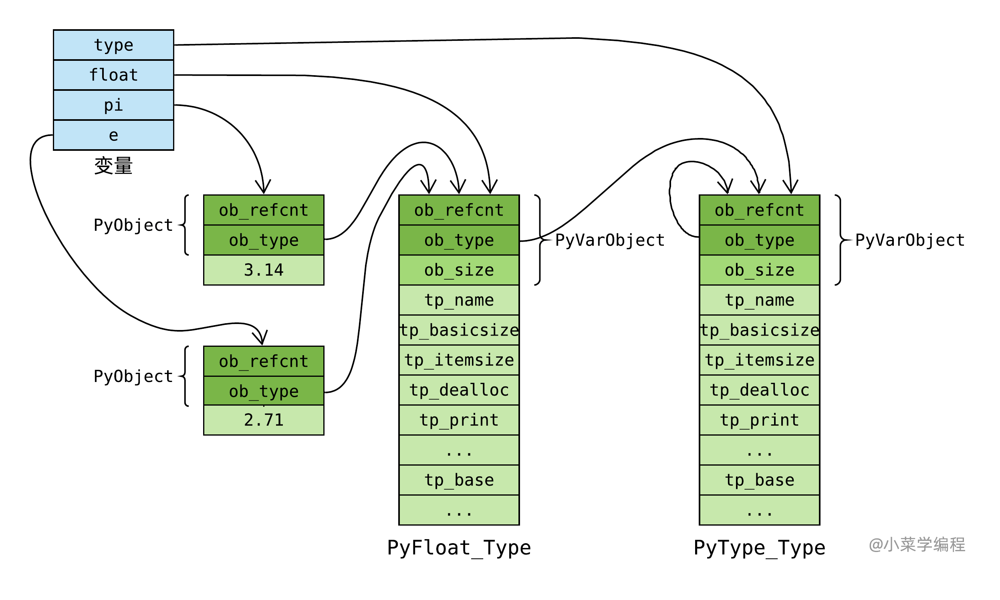
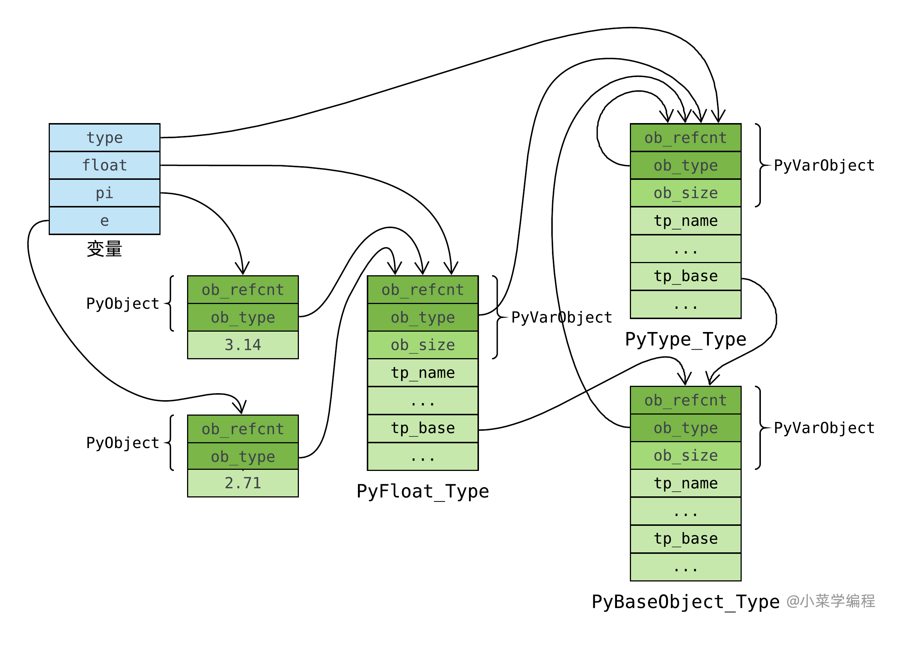

PyTypeObject
本部分内容包含直接转载引用内容，如有侵权请通知
类型对象（用于保存某类型信息的结构体）
PyTypeObject 是 Python C API 中的一个核心结构体，用于表示 Python 中的类型。每个 Python 对象都有一个类型，而这个类型就是由 PyTypeObject 结构体表示的。
结构定义
PyTypeObject 结构体的定义如下：
typedef struct _typeobject {
PyObject_VAR_HEAD
const char *tp_name; /* 类型名称 */
Py_ssize_t tp_basicsize, tp_itemsize; /* 对象的基本大小和项大小 */
/* 方法集 */
destructor tp_dealloc;
printfunc tp_print;
getattrfunc tp_getattr;
setattrfunc tp_setattr;
/* ... 其他方法 ... */
hashfunc tp_hash;
/* 类型比较函数 */
comparisonfunc tp_compare;
/* 类型转换函数 */
convertfunc tp_as_number;
tp_as_sequence;
tp_as_mapping;
/* ... 其他属性 ... */
struct _typeobject *tp_base; /* 基类 */
PyObject *tp_dict; /* 类的字典 */
/* ... 其他字段 ... */
} PyTypeObject;
主要字段
tp_name：类型的名称，如"int","str"等。tp_basicsize：对象的基本大小（不包括可变部分）。tp_itemsize：如果类型表示一个数组或类似数组的对象，此字段表示每个项的大小。tp_dealloc：对象的析构函数。tp_print：对象的打印函数。tp_getattr和tp_setattr：对象的属性访问函数。tp_hash：对象的哈希函数。tp_compare：对象的比较函数。tp_as_number,tp_as_sequence,tp_as_mapping：对象作为数字、序列、映射时的操作函数。tp_base：基类类型对象。tp_dict：类型的命名空间字典，包含类型的属性和方法。
动态类型系统
Python 的类型系统是动态的，允许在运行时创建和修改类型。通过 PyTypeObject 结构体，Python C API 提供了创建新类型、修改现有类型以及查询类型信息的接口。
Py(Typename)Object
其中(Typename)是可以替换位类型名称，比如int类型可以替换为PyLongObject，他们才是真正存放变量信息的结构体
Py(Typename)Object和PyTypeObject的区别
PyLongObject是一种具体的对象类型，而PyTypeObject则描述了这种类型的元数据。具体关系如下：
- 类型描述:
PyLongObject的ob_type字段指向PyLong_Type，这是一个PyTypeObject实例。PyLong_Type定义了长整数的所有属性和方法，例如加法、减法、乘法等操作。- 继承关系: 在 Python 的类型体系中，所有的对象都继承自
PyObject，而PyObject包含一个指向PyTypeObject的指针。PyLongObject继承自PyObject，因此它也有一个ob_type字段指向其类型对象PyLong_Type。- 动态类型系统: Python 的动态类型系统依赖于
PyTypeObject来在运行时确定对象的类型，并调用相应的操作。当你对一个长整数进行操作时，Python 会通过ob_type找到PyLong_Type，然后调用其定义的方法来执行操作。
用C创建一个Python的类型
以下是一个简单的示例，展示如何使用 PyTypeObject 创建一个新的 Python 类型：
我们先根据结构的声明我们的新类型
#include <Python.h>
typedef struct {
PyObject_HEAD
int value;
} MyIntObject;
static PyTypeObject MyIntType = {
PyVarObject_HEAD_INIT(NULL, 0)
.tp_name = "myint.MyInt",
.tp_basicsize = sizeof(MyIntObject),
.tp_flags = Py_TPFLAGS_DEFAULT,
.tp_new = MyInt_new,
.tp_init = (initproc)MyInt_init,
.tp_members = MyInt_members,
};
如何在结构体后跟上我们新创建类型的方法
static PyObject* MyInt_new(PyTypeObject *type, PyObject *args, PyObject *kwds) {
MyIntObject *self;
self = (MyIntObject *)type->tp_alloc(type, 0);
if (self != NULL) {
self->value = 0;
}
return (PyObject *)self;
}
static int MyInt_init(MyIntObject *self, PyObject *args, PyObject *kwds) {
static char *kwlist[] = {"value", NULL};
if (!PyArg_ParseTupleAndKeywords(args, kwds, "i", kwlist, &self->value))
return -1;
return 0;
}
static PyMemberDef MyInt_members[] = {
{"value", T_INT, offsetof(MyIntObject, value), 0, "integer value"},
{NULL} /* Sentinel */
};
static PyModuleDef myintmodule = {
PyModuleDef_HEAD_INIT,
.m_name = "myint",
.m_doc = "Example module that creates an extension type",
.m_size = -1,
};
加载类型
PyMODINIT_FUNC PyInit_myint(void) {
PyObject *m;
if (PyType_Ready(&MyIntType) < 0)
return NULL;
m = PyModule_Create(&myintmodule);
if (m == NULL)
return NULL;
Py_INCREF(&MyIntType);
PyModule_AddObject(m, "MyInt", (PyObject *)&MyIntType);
return m;
}
PyType_Type，类型的类型
我们初步考察了 float 类型对象，知道它在 C 语言层面是 PyFloat_Type 全局静态变量。 类型是一种对象，它也有自己的类型，也就是 Python 中的 type ：
>>> float.__class__
<class 'type'>
那么， type 在 C 语言层面又长啥样呢？
围观 PyFloat_Type 时，我们通过 ob_type 字段揪住了 PyType_Type 。 的确，它就是 type 的肉身。 PyType_Type 在 Object/typeobject.c 中定义：
PyTypeObject PyType_Type = {
PyVarObject_HEAD_INIT(&PyType_Type, 0)
"type", /* tp_name */
sizeof(PyHeapTypeObject), /* tp_basicsize */
sizeof(PyMemberDef), /* tp_itemsize */
(destructor)type_dealloc, /* tp_dealloc */
// ...
(reprfunc)type_repr, /* tp_repr */
// ...
};
内建类型和自定义类对应的 PyTypeObject 对象都是这个通过 PyType_Type 创建的。 PyType_Type 在 Python 的类型机制中是一个至关重要的对象，它是所有类型的类型，称为 元类型 ( meta class )。 借助元类型，你可以实现很多神奇的高级操作。
注意到， PyType_Type 将自己的 ob_type 字段设置成它自己(第 2 行)，这跟我们在 Python 中看到的行为是吻合的：
>>> type.__class__
<class 'type'>
>>> type.__class__ is type
True
至此，元类型 type 在对象体系里的位置非常清晰了：

PyBaseObject_Type，类型之基
